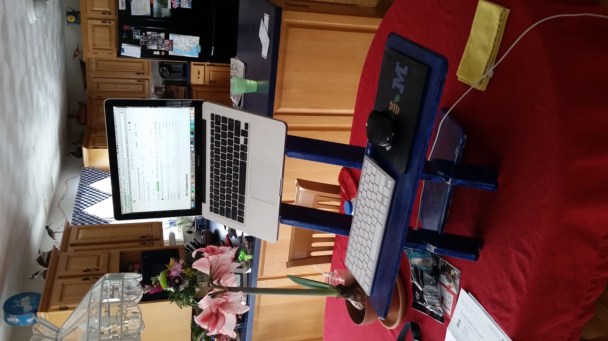

Hi, my name is James, welcome to my blog. Here you'll find posts on an array of different subjects including tech/web development, volunteering, travel, business/finance, guitar/music, politics, soccer, art, cooking, family, reading, and beer.
I am currently in my mid-twenties and living with my girlfriend in the Boston area. I'm enrolled in Flatiron School's online Learn Verified program in hopes of becoming a full stack web developer; and I also volunteer at the Lowell Association for the Blind.
In my spare time I mostly hang out with friends, play soccer, play guitar, and blog; but I also paint and I'm trying to read more. Traveling is another activity I try to set time aside for. In 2015 I visited Panama, Israel, and Thailand. This year I look forward to my first time in South America when I go to Columbia in May/June.
 future slide showAfter Flatiron, I hope my career goes in the direction of a start up, preferably something that does some good, not just makes money. However, I would love to gain experience and enjoy the social/collaborative aspect of a big office, while building my own project on the side.